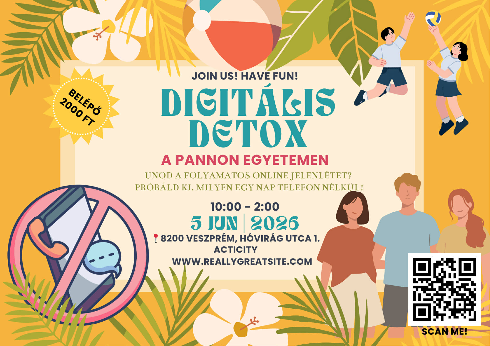

Pannon Egyetem | 2026. Június 5.
Digitális Detox a Pannonon: "Tedd le a telefont, vedd fel a ritmust!" Projektünk célja, hogy tudatosítsuk az egyetemi polgárokban az offline jelenlét fontosságát és közösségépítő erejét egy technológiamentes napon keresztül.
Elsősorban a Pannon Egyetem hallgatói és oktatói, akik a napi 8-10 órás képernyőidő miatt fokozott stressznek és digitális fáradtságnak vannak kitéve. A közösségi igényfelmérésünk igazolta, hogy nagy az igény a személyes interakciókra épülő programokra.
Veszprém, Acticity és az egyetemi park. A technikai feltételeket (hangosítás, eszközök) az egyetemi hallgatói önkormányzat biztosítja.
A projekt hangulatát tükröző plakátunkat a letisztultság és a nyári életérzés jegyében terveztük meg.

Használt eszközök: Canva / AI képalkotó. Prompt: [Ide írd a használt promptot]
A programtervet egy 20 fős reprezentatív kérdőíves felmérés alapozta meg.
Elemzés: Az adatokból kiderült, hogy a válaszadók 85%-a érzi úgy, hogy túl sok időt tölt a telefonjával, és szívesen részt venne egy közösségi sportprogramban.
Ebben a részben (a feladatkiírás szerint) nem használható AI. Írd le a saját tapasztalataidat:
[Saját, egyéni gondolataid helye...]